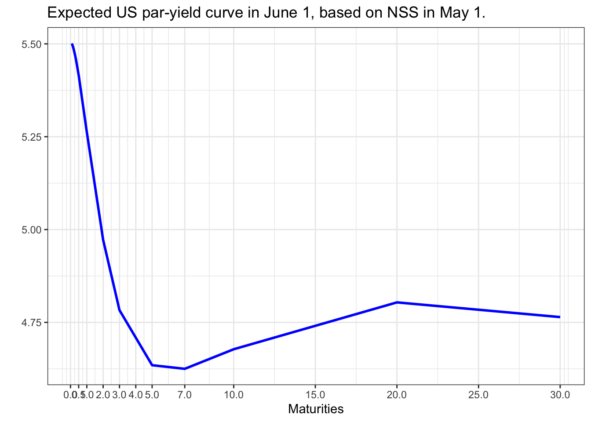

한 제조업체의 재무담당자가 usd 100 million 에 달하는 운전자본 working capital 을 3개월 정도 repo 시장에 투자하여 이익을 취하고자 한다.
기간은 2020년 1월 15일(현재, 포함)에 시작하여 2020년 4월 15일(불포함)이 환매일이다. 즉 재무담당자는 91일 동안 daily SOFR 를 얻게 된다.
그러나 최근 SOFR 의 하락세가 고민이 되어 투자금의 절반인 50 million 은 2020년 4월 만기인 3개월 SOFR 선물을 매수하여 수익 금리를 고정하는 효과를 가지려고 한다.
기간 내내 금리가 1bp 하락한다면, act/360 기준으로 회사는 얼마의 손해가 발생하는가?
이 절반에 대하여 SOFR 선물로 헤지를 한다면 몇 개의 선물 계약을 해야할지 본인의 계산을 쓰세요.
Answer
전체 노출액 중 절반은 정확히 헷지하였으므로, 기간 중 노출액은 50mUSD입니다.
노출기간은 91일이므로, 회사의 손해는 \(50,000,000\times 0.0001\times\frac{91}{360}=1263.889USD\)
SOFR선물은 (100-r)로 호가하며, 1bp에 대해 25$만큼 변동합니다.
따라서, 손실액만큼 SOFR선물에서 이익이 발생하도록 하려면 \(\frac{1263.889}{25}=50.56\), 약 51계약 매수해야합니다.
Problem 2
다음의 표는 2020년 6월 5일 ICE에서 가져온 usd스왑데이터이다. 편의상 각 스왑금리는 연 1회 지급한다고 하자. 우리는 bootstrapping 기법을 이용하여 이 스왑금리들을 할인율곡선 또는 현물이자율 곡선으로 변환할 수 있다.
구 분
1
2
3
4
5
6
Swap rate
0.307%
0.299%
0.346%
0.424%
0.517%
0.614%
이 문제에서는 그와 달리 매해 말 지급부담을 지니고 있는 은행 A를 고려한다. 이 은행은 현 시점에서 floating rate notes 변동금리부채권과 스왑을 매수하여 이 지급부담을 맞추려고 한다. 이때 변동금리부채권과 스왑의 액면값들을 구하는 것을 reverse bootstrapping이라 한다. 보다 정확히 다음의 구조를 고려하자.
각 FRN은 \(N_1, ... , N_6\)의 액면을 가지고 있으며 이들은 i번째 해의 말까지 매년 \(N_i\) 에 해당하는 변동금리를 지급하고 i번째 해의 말에는 액면 \(N_i\) 도 지급한다.
각 스왑의 액면 역시 \(N_i\)이며 A는 floating rate payer이다. 즉 i번째 해의 말까지 매년 \(N_i\)에 해당하는 변동금리를 거래상대방에게 지급한다. 역으로 거래상대방은 매해 말 \(N_is_i\) 을 지불한다. 여기에서 \(s_i\)는 i 만기 스왑금리이다.
\(N_1,...,N_6\)를 구하고 소수점 네째자리까지 리포트하시오.
Answer
은행이 매년 1m$의 채무를 커버하기위해 1~6년 만기의 FRN을 \(N_1\sim N_6\)만큼 매수하고, 여기에서 발생하는 변동금리이자분을 고정금리로 전환하기위해 Fixed-payer로 IRS를 동일한 명목금액 \(N_1\sim N_6\) 만큼 체결한다면, 매년 은행의 pay-off는 아래와 같습니다.
Year
FRN
IRS
Net
1
\(\sum_{i=1}^6N_ir_i+N_1\)
\(\sum_{i=1}^6(N_is_i-N_ir_i)\)
\(N_1+\sum_{i=1}^6N_is_i\)
2
\(\sum_{i=2}^6N_ir_i+N_2\)
\(\sum_{i=2}^6(N_is_i-N_ir_i)\)
\(N_2+\sum_{i=2}^6N_is_i\)
3
\(\sum_{i=3}^6N_ir_i+N_3\)
\(\sum_{i=3}^6(N_is_i-N_ir_i)\)
\(N_3+\sum_{i=3}^6N_is_i\)
4
\(\sum_{i=4}^6N_ir_i+N_4\)
\(\sum_{i=4}^6(N_is_i-N_ir_i)\)
\(N_4+\sum_{i=4}^6N_is_i\)
5
\(\sum_{i=5}^6N_ir_i+N_5\)
\(\sum_{i=5}^6(N_is_i-N_ir_i)\)
\(N_5+\sum_{i=5}^6N_is_i\)
6
\(N_6r_6+N_6\)
\(N_6s_6-N_6r_6\)
\(N_6+N_6s_6\)
해당 pay-off에 따라 6년의 액면금액 \(N_6\)부터 reverse-bootstrapping방식으로 \(N_i\)를 모두 산출한 결과는 아래와 같습니다.
미 재무부에서 발표하는 일별 par yield 데이터를 찾되, 2024년 1월부터 5월까지 매월 첫번째 일자의 커브를 구하시오. 그리고 이 5개의 금리 커브에 대하여 Nelson-Siegel-Svensson 모형을 적용하여 본인이 구한 최선의 fitted curve를 리포트하시오. 1개월 금리부터 30년 금리까지 데이터 전체를 활용하시오.
여기서 정답은 없으니, 본인이 적절한 초기값 및 제약식을 넣어 문제를 푸세요.
Answer
먼저, 미 재무부의 daily par yield 데이터를 이용하여 산출한 매월 첫번째 일자의 커브는 아래와 같습니다.
먼저, 초기값을 \(\beta_0=30y\;\;par\;\;rate,\;\;\;\beta_1=1m\;\;par\;\;rate-\beta_0\) 및 \(\beta_{2,3},\;\tau_{1,2}\)는 \((-5,\;5)\) 범위의 Uniform dist. random number로 설정하겠습니다.
해당 초기값에 따라 constraint condition을 기준금리의 변동폭을 고려하여 25bp, \(|\beta_0+\beta_1-1m\;\;par\;\;rate|<0.25\)로 설정하고 finite difference method(optim fn. in R)를 통해 최적해를 산출합니다. (tau와 beta는 별도의 제약식 없이 진행하였습니다.)
이러한 방식을 1,000번 반복하는 Monte-carlo simulation을 통해 1,000개의 최적해를 산출하고, 1,000개의 NSS rate curve에서 MSE가 가장 낮은 curve를 최적 fitted curve로 선정하겠습니다.
이를 구현하기 위한 R코드 및 24년 1~5월의 fitted curve는 아래와 같습니다.
1. NSS Model 함수
# (nelson_siegel) return NSS model rates for given parameters# maturity : vector of year maturity# params : vector of NSS medel 6 parameters, beta0 to tau2nelson_siegel <-function(maturity, params){# parameters beta0 = params[1] beta1 = params[2] beta2 = params[3] beta3 = params[4] tau1 = params[5] tau2 = params[6]# function beta0 + beta1 * (1-exp(-maturity/tau1)) / (maturity/tau1) + beta2 * ((1-exp(-maturity/tau1)) / (maturity/tau1) -exp(-maturity/tau1)) + beta3 * ((1-exp(-maturity/tau2)) / (maturity/tau2) -exp(-maturity/tau2)) }
2. NSS 최적해 산출 함수(finite difference method)
# (optim_nelson_siegel) return optimal tibble for given term-structure,# using finite difference method# maturity : vector of year maturity# term_sturucture : vector of real spot rate, order to maturity, omit %optim_nelson_siegel <-function(term_structure =NULL, maturity =NULL, params =rep(0.1, 6),contraint_threshold =0.1, tau_threshold =10, beta_threshold =30){ loss_function <-function(params){# parameters beta0 = params[1] beta1 = params[2] beta2 = params[3] beta3 = params[4] tau1 = params[5] tau2 = params[6]# contraints contraint =abs(beta0 + beta1 - term_structure[1])if(contraint > contraint_threshold ){return(NA) }# if(tau1 > tau_threshold | tau2 > tau_threshold){# return(NA)# }# # if(beta2 > beta_threshold | beta3 > beta_threshold ){# return(NA)# }sum( (term_structure - beta0 - beta1 * (1-exp(-maturity/tau1)) / (maturity/tau1) - beta2 * ((1-exp(-maturity/tau1)) / (maturity/tau1) -exp(-maturity/tau1)) - beta3 * ((1-exp(-maturity/tau2)) / (maturity/tau2) -exp(-maturity/tau2)) )^2) }# set initial values for to beta0 and beta1 that respect the contraint # beta0 is long-term rate & beta1 is short-term rate minus beta0 params =c(term_structure[length(term_structure)], term_structure[1]-term_structure[length(term_structure)], params[3:6] )# beta0 & beta1 is equal to (short-term rate)/2# params = c(term_structure[1]/2,term_structure[1]/2,params[3:6] )# minimization of the loss function optimization =optim(params, loss_function)# optimal parameters optim_params =c(beta0 = optimization$par[1], beta1 = optimization$par[2], beta2 = optimization$par[3],beta3 = optimization$par[4],tau1 = optimization$par[5], tau2 = optimization$par[6])# fitted value from Nelson-Siegel base function fitted_values =nelson_siegel(maturity, optim_params)# compute the mean square error mse_fit =sd(fitted_values - term_structure, na.rm =TRUE)# output dplyr::tibble( maturity =list(maturity),term_structure =list(term_structure),start_params =list(params),optim_params =list(optim_params),fit =list(fitted_values),mse = mse_fit )}
3. Uniform dist. random number 생성
# (random_params) return random number follows an uniform distribution# n.params: number of parameter to generate # params.min: for random generation, minimum parameter# params.max: for random generation, maximum parameter# seed: to control randomness random_params <-function(n.params =1, params.min =0, params.max =5, seed =1){set.seed(seed)runif(n.params, params.min, params.max)}
4. Monte-carlo simulation (Calibration)
# (calibrate_nelson_siegel) return n-times "optim_nelson_siegel" outputs# using Monte-carlo simulation for random 3 parameters(beta2 to tau2)# n: number of simulations # params.min: for random generation, minimum parameter# params.max: for random generation, maximum parameter# verbose: disply progress in the importation.calibrate_nelson_siegel <-function(object, n =100, params.min =-5, params.max =5, contraint_threshold =0.01, verbose =TRUE ){# initialize the parameters term_structure = object$term_structure[[1]] maturity = object$maturity[[1]]# list containing all the simulations simulations =list()# safe version to avoid errors if we made many simulations safe_optim = purrr::safely(optim_nelson_siegel)for(i in1:n){# generate a random seed random_seed =mean(random_params(10, 0, 100000, seed = i))# generate random parameters random_params =random_params(6, params.min, params.max, seed = random_seed) simulations[[i]] =safe_optim(term_structure = term_structure, maturity = maturity, params = random_params, contraint_threshold = contraint_threshold)$resultif( verbose &(i%%50==0)){message("Simulations: ", i, "/", n)} }# unique dataset for all the simulation simulations_df = dplyr::bind_rows(simulations) # add the initial object simulations_df = dplyr::bind_rows(object, simulations) # index for the simulations simulations_df = dplyr::mutate(simulations_df, n =1:nrow(simulations_df)) return(simulations_df)}
5. Optimal fitted curve 산출 및 시각화
# (optimal_params_ns) summarize of all above, return optimal result minimize MSE from n-times simulation.# term_structure = NULL# maturity = NULL# n = 1000# params.init = rep(0.1, 6)# params.min = -5# params.max = 5# contraint_threshold = 0.1# label = NULL (label for the plot)# verbose = TRUEoptimal_params_ns <-function(term_structure =NULL, maturity =NULL, n =1000, params.init =rep(0.1, 6), params.min =-5, params.max =5,contraint_threshold =0.1, label =NULL, verbose =TRUE){# first fit first_fit_ns =optim_nelson_siegel(term_structure = term_structure, maturity = maturity, params = params.init)# simulations sim_fit_ns =calibrate_nelson_siegel(first_fit_ns, n = n, params.min = params.min, params.max = params.max, contraint_threshold = contraint_threshold)# best parameters df_optim_params = sim_fit_ns[which(sim_fit_ns$mse ==min(sim_fit_ns$mse, na.rm =TRUE)),]# setting the title of the plot if(!is.null(label) &is.character(label)){ plot_title =paste0("Fitted Nelson-Siegel-Svensonn vs Real Value ", "(", label, ")" ) } else { plot_title ="Fitted Nelson-Siegel-Svensonn vs Real Value" }# plot of fitted vs real values plot_df = dplyr::inner_join( dplyr::tibble(t = maturity,pred = df_optim_params$fit[[1]] ), dplyr::tibble(t = maturity,real = term_structure ),by ="t" ) # Plot Real value vs Fitted Values plot_ns = plot_df %>%mutate(label =paste0("T = ", round(t, 3)))%>%ggplot()+geom_point(aes(t, pred), color ="red", size =2, alpha =0.8) +geom_point(aes(t, real), color ="black", alpha =0.5)+geom_line(aes(t, pred), color ="red", size =1) +geom_line(aes(t, real), color ="black", linetype ="dashed") +geom_label(aes(t+1, real-0.001, label = label), size =1.5)+theme(axis.text.x =element_text(angle =25, face ="bold", size =7), axis.text.y =element_text(face ="bold"), axis.title =element_text(face ="bold"),plot.title =element_text(face ="bold"),plot.subtitle =element_text(face ="italic"),plot.caption =element_text(face ="italic"),panel.grid.major.x =element_line(colour="grey60", linetype="dotted"),panel.grid.minor.x =element_blank(),panel.grid.major.y =element_line(colour="grey60", linetype="dotted"),legend.text =element_text(face ="italic", size =5),legend.title =element_text(face ="bold"),legend.position ="top" ) +scale_x_continuous(breaks=c(0, 0.5, 1,2,3,4,5,7,10,15, 20, 25, 30))+ggtitle(plot_title, subtitle ="Fitted Value in Red and Real Values in Black" )+xlab("Maturities")+ylab("") +labs(caption =paste0("Mean Squared Error of the Fit: ", round(df_optim_params$mse, 6)))+theme_bw()# output structure(list(optim_params =tibble( beta0=df_optim_params$optim_params[[1]][1],beta1=df_optim_params$optim_params[[1]][2],beta2=df_optim_params$optim_params[[1]][3],beta3=df_optim_params$optim_params[[1]][4],tau1=df_optim_params$optim_params[[1]][5],tau2=df_optim_params$optim_params[[1]][6]),plot_ns = plot_ns,simulations = sim_fit_ns,df_optim = df_optim_params ) )}
Result
앞서 도식화한 24년 1~5월의 US par-yield curve에 위 방법을 적용하여 각각 모델링한 fitted curve는 아래와 같습니다.
이를 이용하여 6월달의 US par-yield curve를 예측하고자 할 때, 모수값들을 활용하여 NSS모델의 6월 예상파라미터를 추정할 수 있습니다.
여기에는 AR, ARMA, GARCH 등의 여러 모델을 생각할 수 있겠으나, 저는 직전 달의 모수값이 다음 달의 모수값에 대한 최적 추정치라고 생각합니다. 모수값의 시계열자료가 5개에 불과하고, 특별한 선형관계나 추세가 관찰되지 않기 때문입니다. 이에 따라 5월달의 NSS모델의 모수값을 6월의 예상파라미터로 고려하겠습니다.
ggplot(est_jun,aes(x=maturity,y=par))+geom_line(colour="blue", size=1)+scale_x_continuous(breaks=c(0, 0.5, 1,2,3,4,5,7,10,15, 20, 25, 30))+ggtitle("Expected US par-yield curve in June 1, based on NSS in May 1.")+xlab("Maturities")+ylab("") +theme_bw()

Problem 5
hw2.xlsx 에는 2011-10-28 부터 2016-10-28 까지의 스왑 데이터가 결측치가 있는 날들은 제외하고 들어 있다. 이를 이용하여 일별 금리변화를 주도하는 세 가지 주성분을 구하여 리포트하시오.
이에 따르면, 첫번째 주성분이 약 88.3%, 두번째 주성분이 8.9%, 세번째 주성분이 1.5%를 설명하고 있습니다. 이는 3가지의 주성분만으로 전체 swap rate curve 변화의 약 98.8%를 설명할 수 있다는 의미입니다.
여기에서, 첫번째 주성분은 전체적인 금리수준의 변화(level change effect)라고 할 수 있고 두번째 주성분은 금리곡선의 기울기 변화(slope change effect), 세번째 주성분은 금리곡선의 볼록성 변화(convecture change effect)라고 할 수 있습니다.
# 이자율기간구조 과제2 {.unnumbered}## Problem 1한 제조업체의 재무담당자가 usd 100 million 에 달하는 운전자본 working capital 을 3개월 정도 repo 시장에 투자하여 이익을 취하고자 한다.기간은 2020년 1월 15일(현재, 포함)에 시작하여 2020년 4월 15일(불포함)이 환매일이다. 즉 재무담당자는 91일 동안 daily SOFR 를 얻게 된다.그러나 최근 SOFR 의 하락세가 고민이 되어 투자금의 절반인 50 million 은 2020년 4월 만기인 3개월 SOFR 선물을 매수하여 수익 금리를 고정하는 효과를 가지려고 한다.기간 내내 금리가 1bp 하락한다면, act/360 기준으로 회사는 얼마의 손해가 발생하는가?이 절반에 대하여 SOFR 선물로 헤지를 한다면 몇 개의 선물 계약을 해야할지 본인의 계산을 쓰세요.### Answer전체 노출액 중 절반은 정확히 헷지하였으므로, 기간 중 노출액은 50mUSD입니다.노출기간은 91일이므로, **회사의 손해**는 $50,000,000\times 0.0001\times\frac{91}{360}=1263.889USD$SOFR선물은 (100-r)로 호가하며, 1bp에 대해 25$만큼 변동합니다.따라서, 손실액만큼 SOFR선물에서 이익이 발생하도록 하려면 $\frac{1263.889}{25}=50.56$, **약 51계약 매수**해야합니다.## Problem 2다음의 표는 2020년 6월 5일 ICE에서 가져온 usd스왑데이터이다. 편의상 각 스왑금리는 연 1회 지급한다고 하자. 우리는 bootstrapping 기법을 이용하여 이 스왑금리들을 할인율곡선 또는 현물이자율 곡선으로 변환할 수 있다.|구 분|1|2|3|4|5|6||:---:|---:|---:|---:|---:|---:|---:||Swap rate|0.307%|0.299%|0.346%|0.424%|0.517%|0.614%|이 문제에서는 그와 달리 매해 말 지급부담을 지니고 있는 은행 A를 고려한다. 이 은행은 현 시점에서 floating rate notes 변동금리부채권과 스왑을 매수하여 이 지급부담을 맞추려고 한다. 이때 변동금리부채권과 스왑의 액면값들을 구하는 것을 reverse bootstrapping이라 한다. 보다 정확히 다음의 구조를 고려하자.- 각 FRN은 $N_1, ... , N_6$의 액면을 가지고 있으며 이들은 i번째 해의 말까지 매년 $N_i$ 에 해당하는 변동금리를 지급하고 i번째 해의 말에는 액면 $N_i$ 도 지급한다.- 각 스왑의 액면 역시 $N_i$이며 A는 floating rate payer이다. 즉 i번째 해의 말까지 매년 $N_i$에 해당하는 변동금리를 거래상대방에게 지급한다. 역으로 거래상대방은 매해 말 $N_is_i$ 을 지불한다. 여기에서 $s_i$는 i 만기 스왑금리이다.$N_1,...,N_6$를 구하고 소수점 네째자리까지 리포트하시오.### Answer은행이 매년 1m\$의 채무를 커버하기위해 1~6년 만기의 FRN을 $N_1\sim N_6$만큼 매수하고, 여기에서 발생하는 변동금리이자분을 고정금리로 전환하기위해 Fixed-payer로 IRS를 동일한 명목금액 $N_1\sim N_6$ 만큼 체결한다면, 매년 은행의 pay-off는 아래와 같습니다.|Year|FRN|IRS|Net||:---:|---:|---:|---:||1|$\sum_{i=1}^6N_ir_i+N_1$|$\sum_{i=1}^6(N_is_i-N_ir_i)$|$N_1+\sum_{i=1}^6N_is_i$||2|$\sum_{i=2}^6N_ir_i+N_2$|$\sum_{i=2}^6(N_is_i-N_ir_i)$|$N_2+\sum_{i=2}^6N_is_i$||3|$\sum_{i=3}^6N_ir_i+N_3$|$\sum_{i=3}^6(N_is_i-N_ir_i)$|$N_3+\sum_{i=3}^6N_is_i$||4|$\sum_{i=4}^6N_ir_i+N_4$|$\sum_{i=4}^6(N_is_i-N_ir_i)$|$N_4+\sum_{i=4}^6N_is_i$||5|$\sum_{i=5}^6N_ir_i+N_5$|$\sum_{i=5}^6(N_is_i-N_ir_i)$|$N_5+\sum_{i=5}^6N_is_i$||6|$N_6r_6+N_6$|$N_6s_6-N_6r_6$|$N_6+N_6s_6$|해당 pay-off에 따라 6년의 액면금액 $N_6$부터 reverse-bootstrapping방식으로 $N_i$를 모두 산출한 결과는 아래와 같습니다.|$N_1$|$N_2$|$N_3$|$N_4$|$N_5$|$N_6$||:--:|:--:|:--:|:--:|:--:|:--:||0.9753m|0.9783m|0.9812m|0.9846m|0.9888m|0.9939m|```{r}#| echo: false#| output: falselibrary(tidyverse)swap <-tibble(tenor=c(1:6),rate=c(0.307,0.299,0.346,0.424,0.517,0.614)/100)``````{r}swap <- swap %>%mutate(par=c(NA,NA,NA,NA,NA,c(1000000/(swap$rate[6]+1))))for(i in5:1){ swap$par[i]=(1000000-sum(swap$rate[(i+1):6]*swap$par[(i+1):6]))/(1+swap$rate[i])}swap```## Problem 3미 재무부에서 발표하는 일별 par yield 데이터를 찾되, 2024년 1월부터 5월까지 매월 첫번째 일자의 커브를 구하시오. 그리고 이 5개의 금리 커브에 대하여 Nelson-Siegel-Svensson 모형을 적용하여 본인이 구한 최선의 fitted curve를 리포트하시오. 1개월 금리부터 30년 금리까지 데이터 전체를 활용하시오.여기서 정답은 없으니, 본인이 적절한 초기값 및 제약식을 넣어 문제를 푸세요.### Answer먼저, **미 재무부의 daily par yield** 데이터를 이용하여 산출한 매월 첫번째 일자의 커브는 아래와 같습니다.```{r}#| code-fold: true#| output: falseuspar <-tibble()uspar <-read_csv("investment_hw/usparyield.csv") %>%arrange(Date) %>%mutate(year=substr(Date,7,10),month=substr(Date,1,2)) %>%group_by(year,month) %>%slice(1) %>%pivot_longer(cols =contains(" "),values_to ="par", names_to ="time") %>%mutate(maturity=c(1,2,3,4,6,12,24,36,60,84,120,240,360)/12) %>%ungroup()``````{r}#| code-fold: trueggplot(uspar,aes(x=maturity,y=par,colour=month))+geom_line()+theme_bw()```다음으로, **NSS모형을 이용한 최적 fitted curve**를 구해보겠습니다.::: {.callout-note title="Nelson-Siegel-Svensson Model"}NSS모형은 instantaneous forword rate를 추정하는 대표적인 모형으로, 3개의 factor와 6개의 parameter($\beta_0\sim\beta_3, \tau_1\sim\tau_2$)를 이용합니다.$$f(t)=\beta_0+\beta_1e^{-\frac{t}{\tau_1}}+\beta_2\frac{t}{\tau_1}e^{-\frac{t}{\tau1}}+\beta_3\frac{t}{\tau_2}e^{-\frac{t}{\tau_2}}$$이를 통해 continuous-compounding spot rate curve를 추정할 수 있습니다.$$r(t)=\beta_0+\beta_1\frac{1-e^{-\frac{t}{\tau_1}}}{\frac{t}{\tau_1}}+\beta_2[\frac{1-e^{-\frac{t}{\tau_1}}}{\frac{t}{\tau_1}}-e^{-\frac{t}{\tau_1}}]+\beta_3[\frac{1-e^{-\frac{t}{\tau_2}}}{\frac{t}{\tau_2}}-e^{-\frac{t}{\tau_2}}]$$:::저는 **최적 fitted curve를 시뮬레이션을 통해 산출**할 예정입니다.먼저, 초기값을 $\beta_0=30y\;\;par\;\;rate,\;\;\;\beta_1=1m\;\;par\;\;rate-\beta_0$ 및 $\beta_{2,3},\;\tau_{1,2}$는 $(-5,\;5)$ 범위의 Uniform dist. random number로 설정하겠습니다.해당 초기값에 따라 constraint condition을 기준금리의 변동폭을 고려하여 25bp, $|\beta_0+\beta_1-1m\;\;par\;\;rate|<0.25$로 설정하고 finite difference method(optim fn. in R)를 통해 최적해를 산출합니다.(tau와 beta는 별도의 제약식 없이 진행하였습니다.)이러한 방식을 1,000번 반복하는 Monte-carlo simulation을 통해 1,000개의 최적해를 산출하고, 1,000개의 NSS rate curve에서 MSE가 가장 낮은 curve를 최적 fitted curve로 선정하겠습니다.이를 구현하기 위한 **R코드 및 24년 1~5월의 fitted curve는 아래와 같습니다.**#### 1. NSS Model 함수```{r}#| output: false# (nelson_siegel) return NSS model rates for given parameters# maturity : vector of year maturity# params : vector of NSS medel 6 parameters, beta0 to tau2nelson_siegel <-function(maturity, params){# parameters beta0 = params[1] beta1 = params[2] beta2 = params[3] beta3 = params[4] tau1 = params[5] tau2 = params[6]# function beta0 + beta1 * (1-exp(-maturity/tau1)) / (maturity/tau1) + beta2 * ((1-exp(-maturity/tau1)) / (maturity/tau1) -exp(-maturity/tau1)) + beta3 * ((1-exp(-maturity/tau2)) / (maturity/tau2) -exp(-maturity/tau2)) }```#### 2. NSS 최적해 산출 함수(finite difference method)```{r}#| output: false# (optim_nelson_siegel) return optimal tibble for given term-structure,# using finite difference method# maturity : vector of year maturity# term_sturucture : vector of real spot rate, order to maturity, omit %optim_nelson_siegel <-function(term_structure =NULL, maturity =NULL, params =rep(0.1, 6),contraint_threshold =0.1, tau_threshold =10, beta_threshold =30){ loss_function <-function(params){# parameters beta0 = params[1] beta1 = params[2] beta2 = params[3] beta3 = params[4] tau1 = params[5] tau2 = params[6]# contraints contraint =abs(beta0 + beta1 - term_structure[1])if(contraint > contraint_threshold ){return(NA) }# if(tau1 > tau_threshold | tau2 > tau_threshold){# return(NA)# }# # if(beta2 > beta_threshold | beta3 > beta_threshold ){# return(NA)# }sum( (term_structure - beta0 - beta1 * (1-exp(-maturity/tau1)) / (maturity/tau1) - beta2 * ((1-exp(-maturity/tau1)) / (maturity/tau1) -exp(-maturity/tau1)) - beta3 * ((1-exp(-maturity/tau2)) / (maturity/tau2) -exp(-maturity/tau2)) )^2) }# set initial values for to beta0 and beta1 that respect the contraint # beta0 is long-term rate & beta1 is short-term rate minus beta0 params =c(term_structure[length(term_structure)], term_structure[1]-term_structure[length(term_structure)], params[3:6] )# beta0 & beta1 is equal to (short-term rate)/2# params = c(term_structure[1]/2,term_structure[1]/2,params[3:6] )# minimization of the loss function optimization =optim(params, loss_function)# optimal parameters optim_params =c(beta0 = optimization$par[1], beta1 = optimization$par[2], beta2 = optimization$par[3],beta3 = optimization$par[4],tau1 = optimization$par[5], tau2 = optimization$par[6])# fitted value from Nelson-Siegel base function fitted_values =nelson_siegel(maturity, optim_params)# compute the mean square error mse_fit =sd(fitted_values - term_structure, na.rm =TRUE)# output dplyr::tibble( maturity =list(maturity),term_structure =list(term_structure),start_params =list(params),optim_params =list(optim_params),fit =list(fitted_values),mse = mse_fit )} ```#### 3. Uniform dist. random number 생성```{r}#| output: false# (random_params) return random number follows an uniform distribution# n.params: number of parameter to generate # params.min: for random generation, minimum parameter# params.max: for random generation, maximum parameter# seed: to control randomness random_params <-function(n.params =1, params.min =0, params.max =5, seed =1){set.seed(seed)runif(n.params, params.min, params.max)}```#### 4. Monte-carlo simulation (Calibration)```{r}#| output: false# (calibrate_nelson_siegel) return n-times "optim_nelson_siegel" outputs# using Monte-carlo simulation for random 3 parameters(beta2 to tau2)# n: number of simulations # params.min: for random generation, minimum parameter# params.max: for random generation, maximum parameter# verbose: disply progress in the importation.calibrate_nelson_siegel <-function(object, n =100, params.min =-5, params.max =5, contraint_threshold =0.01, verbose =TRUE ){# initialize the parameters term_structure = object$term_structure[[1]] maturity = object$maturity[[1]]# list containing all the simulations simulations =list()# safe version to avoid errors if we made many simulations safe_optim = purrr::safely(optim_nelson_siegel)for(i in1:n){# generate a random seed random_seed =mean(random_params(10, 0, 100000, seed = i))# generate random parameters random_params =random_params(6, params.min, params.max, seed = random_seed) simulations[[i]] =safe_optim(term_structure = term_structure, maturity = maturity, params = random_params, contraint_threshold = contraint_threshold)$resultif( verbose &(i%%50==0)){message("Simulations: ", i, "/", n)} }# unique dataset for all the simulation simulations_df = dplyr::bind_rows(simulations) # add the initial object simulations_df = dplyr::bind_rows(object, simulations) # index for the simulations simulations_df = dplyr::mutate(simulations_df, n =1:nrow(simulations_df)) return(simulations_df)}```#### 5. Optimal fitted curve 산출 및 시각화```{r}#| output: false# (optimal_params_ns) summarize of all above, return optimal result minimize MSE from n-times simulation.# term_structure = NULL# maturity = NULL# n = 1000# params.init = rep(0.1, 6)# params.min = -5# params.max = 5# contraint_threshold = 0.1# label = NULL (label for the plot)# verbose = TRUEoptimal_params_ns <-function(term_structure =NULL, maturity =NULL, n =1000, params.init =rep(0.1, 6), params.min =-5, params.max =5,contraint_threshold =0.1, label =NULL, verbose =TRUE){# first fit first_fit_ns =optim_nelson_siegel(term_structure = term_structure, maturity = maturity, params = params.init)# simulations sim_fit_ns =calibrate_nelson_siegel(first_fit_ns, n = n, params.min = params.min, params.max = params.max, contraint_threshold = contraint_threshold)# best parameters df_optim_params = sim_fit_ns[which(sim_fit_ns$mse ==min(sim_fit_ns$mse, na.rm =TRUE)),]# setting the title of the plot if(!is.null(label) &is.character(label)){ plot_title =paste0("Fitted Nelson-Siegel-Svensonn vs Real Value ", "(", label, ")" ) } else { plot_title ="Fitted Nelson-Siegel-Svensonn vs Real Value" }# plot of fitted vs real values plot_df = dplyr::inner_join( dplyr::tibble(t = maturity,pred = df_optim_params$fit[[1]] ), dplyr::tibble(t = maturity,real = term_structure ),by ="t" ) # Plot Real value vs Fitted Values plot_ns = plot_df %>%mutate(label =paste0("T = ", round(t, 3)))%>%ggplot()+geom_point(aes(t, pred), color ="red", size =2, alpha =0.8) +geom_point(aes(t, real), color ="black", alpha =0.5)+geom_line(aes(t, pred), color ="red", size =1) +geom_line(aes(t, real), color ="black", linetype ="dashed") +geom_label(aes(t+1, real-0.001, label = label), size =1.5)+theme(axis.text.x =element_text(angle =25, face ="bold", size =7), axis.text.y =element_text(face ="bold"), axis.title =element_text(face ="bold"),plot.title =element_text(face ="bold"),plot.subtitle =element_text(face ="italic"),plot.caption =element_text(face ="italic"),panel.grid.major.x =element_line(colour="grey60", linetype="dotted"),panel.grid.minor.x =element_blank(),panel.grid.major.y =element_line(colour="grey60", linetype="dotted"),legend.text =element_text(face ="italic", size =5),legend.title =element_text(face ="bold"),legend.position ="top" ) +scale_x_continuous(breaks=c(0, 0.5, 1,2,3,4,5,7,10,15, 20, 25, 30))+ggtitle(plot_title, subtitle ="Fitted Value in Red and Real Values in Black" )+xlab("Maturities")+ylab("") +labs(caption =paste0("Mean Squared Error of the Fit: ", round(df_optim_params$mse, 6)))+theme_bw()# output structure(list(optim_params =tibble( beta0=df_optim_params$optim_params[[1]][1],beta1=df_optim_params$optim_params[[1]][2],beta2=df_optim_params$optim_params[[1]][3],beta3=df_optim_params$optim_params[[1]][4],tau1=df_optim_params$optim_params[[1]][5],tau2=df_optim_params$optim_params[[1]][6]),plot_ns = plot_ns,simulations = sim_fit_ns,df_optim = df_optim_params ) )}```#### Result앞서 도식화한 **24년 1~5월의 US par-yield curve**에 위 방법을 적용하여 **각각 모델링한 fitted curve는 아래와 같습니다.**```{r}#| output: false#| code-fold: trueuspar_jan <- uspar %>%filter(month=="01")uspar_feb <- uspar %>%filter(month=="02")uspar_mar <- uspar %>%filter(month=="03")uspar_apr <- uspar %>%filter(month=="04")uspar_may <- uspar %>%filter(month=="05")Jan <-optimal_params_ns(uspar_jan$par,uspar_jan$maturity,n=1000,contraint_threshold =0.25)Feb <-optimal_params_ns(uspar_feb$par,uspar_feb$maturity,n=1000,contraint_threshold =0.25)Mar <-optimal_params_ns(uspar_mar$par,uspar_mar$maturity,n=1000,contraint_threshold =0.25)Apr <-optimal_params_ns(uspar_apr$par,uspar_apr$maturity,n=1000,contraint_threshold =0.25)May <-optimal_params_ns(uspar_may$par,uspar_may$maturity,n=1000,contraint_threshold =0.25)``````{r}Jan$plot_nsFeb$plot_nsMar$plot_nsApr$plot_nsMay$plot_ns```## Problem 4위 문제에서 구한 모수값들을 가지고 6월 첫날의 금리커브를 예측하려고 한다. 모수값들에 대하여 적절한 (예: 엑셀에서 제공하는 선형 추세선을 찾아 사용) 예측값들을 구하고 이를 바탕으로 금리 커브를 구하시오.### Answer먼저, 문제3에서 최종적으로 산출한 NSS fitted curve에 대하여 각각의 파라미터는 아래와 같습니다.```{r}#| code-fold: trueoptim_parameters <- Jan$optim_params %>%union_all(Feb$optim_params) %>%union_all(Mar$optim_params) %>%union_all(Apr$optim_params) %>%union_all(May$optim_params) %>%mutate(month=c("Jan","Feb","Mar","Apr","May"))optim_parameters```이를 이용하여 6월달의 US par-yield curve를 예측하고자 할 때, 모수값들을 활용하여 NSS모델의 6월 예상파라미터를 추정할 수 있습니다.여기에는 AR, ARMA, GARCH 등의 여러 모델을 생각할 수 있겠으나, 저는 직전 달의 모수값이 다음 달의 모수값에 대한 최적 추정치라고 생각합니다. 모수값의 시계열자료가 5개에 불과하고, **특별한 선형관계나 추세가 관찰되지 않기 때문**입니다. 이에 따라 **5월달의 NSS모델의 모수값을 6월의 예상파라미터**로 고려하겠습니다.이를 이용하여 산출한 **6월 예상 US par-yield 및 curve는 아래와 같습니다.**```{r}#| code-fold: trueest_jun <-tibble(maturity=uspar_may$maturity,par=May$df_optim$fit[[1]])est_junggplot(est_jun,aes(x=maturity,y=par))+geom_line(colour="blue", size=1)+scale_x_continuous(breaks=c(0, 0.5, 1,2,3,4,5,7,10,15, 20, 25, 30))+ggtitle("Expected US par-yield curve in June 1, based on NSS in May 1.")+xlab("Maturities")+ylab("") +theme_bw()```## Problem 5hw2.xlsx 에는 2011-10-28 부터 2016-10-28 까지의 스왑 데이터가 결측치가 있는 날들은 제외하고 들어 있다. 이를 이용하여 일별 금리변화를 주도하는 세 가지 주성분을 구하여 리포트하시오.### Answer먼저, 예제파일을 읽어와 일별/만기별 스왑금리의 차이를 bp단위로 계산하겠습니다.```{r}#| output: false#| code-fold: truepca <-read_csv("investment_hw/term_hw2.csv") %>%pivot_longer(cols=contains("DSWP"),names_to ="maturity", values_to ="rate") %>%arrange(maturity,observation_date) %>%mutate(changes=(rate-lag(rate))*100) %>%filter(maturity==lag(maturity)) %>%mutate(date=observation_date,maturity=substr(maturity,5,nchar(maturity)) %>%as.integer()) %>%select(date,maturity,changes)```다음으로, 각 만기별 covariance matrix를 산출하면 아래와 같습니다.```{r}cov_matrix <- pca %>%pivot_wider(names_from ="maturity", values_from ="changes")cov_matrix <- cov_matrix[,2:ncol(cov_matrix)] %>%select(`1`,`2`,`3`,`4`,`5`,`7`,`10`,`30`) %>%cov()options(digits=4)cov_matrix```이제, 공분산행렬을 통해 eigenvalue와 eigenvector를 계산하겠습니다.```{r}eigenstuff <-eigen(cov_matrix)eigenstuff ```해당 **eigenvalue는 각 주성분의 설명력**을 나타냅니다. 각 eigenvalue의 전체 합에 대한 **비율은 전체 금리변화에서 해당 주성분이 설명하는 비율**을 나타냅니다.```{r}eigenstuff$ratio=eigenstuff$values/sum(eigenstuff$values)eigenstuff$ratio```이에 따르면, **첫번째 주성분이 약 88.3%, 두번째 주성분이 8.9%, 세번째 주성분이 1.5%를 설명**하고 있습니다. 이는 **3가지의 주성분만으로 전체 swap rate curve 변화의 약 98.8%를 설명**할 수 있다는 의미입니다.여기에서, **첫번째 주성분**은 **전체적인 금리수준의 변화(level change effect)**라고 할 수 있고 **두번째 주성분**은 **금리곡선의 기울기 변화(slope change effect)**, **세번째 주성분**은 **금리곡선의 볼록성 변화(convecture change effect)**라고 할 수 있습니다.세가지 주성분의 eigenvector를 도식화하면 아래와 같습니다.```{r}#| code-fold: trueplot_pca <-tibble(maturity=c(1:8),PC1=eigenstuff$vectors[,1],PC2=eigenstuff$vectors[,2],PC3=eigenstuff$vectors[,3]) %>%pivot_longer(cols=contains("PC"),names_to ="components", values_to ="values") %>%ggplot(.,aes(x=maturity,y=values,colour=components))+geom_line(size=1)+theme_bw()plot_pca```